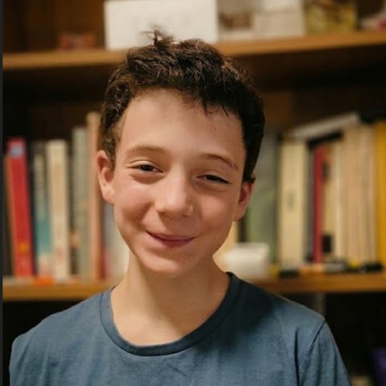

ה’ 2 הגיע הזמן לבחור נכון, עם זוהר נגיע לנצחון!
אני אפעל כדי שבית הספר יהיה:
- נעים ומכבד
- מושקע ומהנה
- ללא אלימות!
- מקום טוב וכיף לכל אחד
ביחד נעשה את בית הספר שלנו טוב יותר!
זוהר מסנז'ניק למועצת התלמידים

(תקף רק לתואר ראשון 😊)
ה’ 2 הגיע הזמן לבחור נכון, עם זוהר נגיע לנצחון!
ביחד נעשה את בית הספר שלנו טוב יותר!